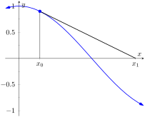
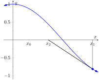
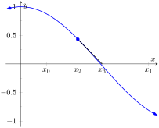
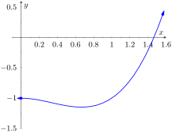
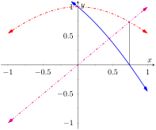
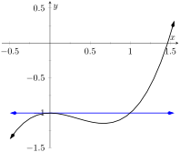
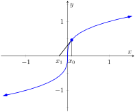
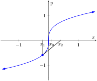
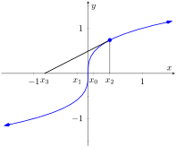

Solving equations is one of the most important things we do in mathematics, yet we are surprisingly limited in what we can solve analytically. For instance, equations as simple as \(x^5+x+1=0\) or \(\cos(x) =x\) cannot be solved by algebraic methods in terms of familiar functions. Fortunately, there are methods that can give us approximate solutions to equations like these. These methods can usually give an approximation correct to as many decimal places as we like. In Section 1.5 we learned about the Bisection Method. This section focuses on another technique (which generally works faster), called Newton's Method.
Newton's Method is built around tangent lines. The main idea is that if \(x\) is sufficiently close to a root of \(f(x)\text{,}\) then the tangent line to the graph at \((x,f(x))\) will cross the \(x\)-axis at a point closer to the root than \(x\text{.}\)
We start Newton's Method with an initial guess about roughly where the root is. Call this \(x_0\text{.}\) (See Figure 4.1.1.(a).) Draw the tangent line to the graph at \((x_0,f(x_0))\) and see where it meets the \(x\)-axis. Call this point \(x_1\text{.}\) Then repeat the process — draw the tangent line to the graph at \((x_1, f(x_1))\) and see where it meets the \(x\)-axis. (See Figure 4.1.1.(b).) Call this point \(x_2\text{.}\) Repeat the process again to get \(x_3\text{,}\)\(x_4\text{,}\) etc. This sequence of points will often converge rather quickly to a root of \(f\text{.}\)
(a)
(b)
(c)
Figure4.1.1.Demonstrating the geometric concept behind Newton's Method
We can use this geometric process to create an algebraic process. Let's look at how we found \(x_1\text{.}\) We started with the tangent line to the graph at \((x_0,f(x_0))\text{.}\) The slope of this tangent line is \(\fp(x_0)\) and the equation of the line is
This line crosses the \(x\)-axis when \(y=0\text{,}\) and the \(x\)-value where it crosses is what we called \(x_1\text{.}\) So let \(y=0\) and replace \(x\) with \(x_1\text{,}\) giving the equation:
Let \(f\) be a differentiable function on an interval \(I\) with a root in \(I\text{.}\) To approximate the value of the root, accurate to \(d\) decimal places:
Choose a value \(x_0\) as an initial approximation of the root. (This is often done by looking at a graph of \(f\text{.}\))
Create successive approximations iteratively; given an approximation \(x_n\text{,}\) compute the next approximation \(x_{n+1}\) as
Stop the iterations when successive approximations do not differ in the first \(d\) places after the decimal point.
Let's practice Newton's Method with a concrete example.
Example4.1.3.Using Newton's Method.
Approximate the real root of \(x^3-x^2-1=0\text{,}\) accurate to the first three places after the decimal, using Newton's Method and an initial approximation of \(x_0=1\text{.}\)
We performed five iterations of Newton's Method to find a root accurate to the first three places after the decimal; our final approximation is \(1.465\text{.}\) The exact value of the root, to six decimal places, is \(1.465571\text{;}\) It turns out that our \(x_5\) is accurate to more than just three decimal places.
A graph of \(f(x)\) is given in Figure 4.1.4. We can see from the graph that our initial approximation of \(x_0=1\) was not particularly accurate; a closer guess would have been \(x_0=1.5\text{.}\) Our choice was based on ease of initial calculation, and shows that Newton's Method can be robust enough that we do not have to make a very accurate initial approximation.

Figure4.1.4.A graph of \(f(x) = x^3-x^2-1\) in Example 4.1.3
We can automate this process on a calculator that has an ANS key that returns the result of the previous calculation. Start by pressing 1 and then Enter. (We have just entered our initial guess, \(x_0=1\text{.}\)) Now compute
\begin{equation*}
\texttt{ ANS } - \frac{f(\texttt{ ANS } )}{\fp(\texttt{ ANS } )}
\end{equation*}
by entering the following and repeatedly press the Enter key.
ANS-(ANS^3-ANS^2-1)/(3*ANS^2-2*ANS)
Each time we press the Enter key, we are finding the successive approximations, \(x_1\text{,}\)\(x_2\text{,}\) …, and each one is getting closer to the root. In fact, once we get past around \(x_7\) or so, the approximations don't appear to be changing. They actually are changing, but the change is far enough to the right of the decimal point that it doesn't show up on the calculator's display. When this happens, we can be pretty confident that we have found an accurate approximation.
Using a calculator in this manner makes the calculations simple; many iterations can be computed very quickly.
Example4.1.5.Using Newton's Method to find where functions intersect.
Use Newton's Method to approximate a solution to \(\cos(x) = x\text{,}\) accurate to five places after the decimal.
Newton's Method provides a method of solving \(f(x) = 0\text{;}\) it is not (directly) a method for solving equations like \(f(x) = g(x)\text{.}\) However, this is not a problem; we can rewrite the latter equation as \(f(x) - g(x)=0\) and then use Newton's Method.
So we rewrite \(\cos(x) =x\) as \(\cos(x)-x=0\text{.}\) Written this way, we are finding a root of \(f(x)=\cos(x) -x\text{.}\) We compute \(\fp(x)=-\sin(x) - 1\text{.}\) Next we need a starting value, \(x_0\text{.}\) Consider Figure 4.1.6, where \(f(x) = \cos(x) -x\) is graphed. It seems that \(x_0=0.75\) is pretty close to the root, so we will use that as our \(x_0\text{.}\) (The figure also shows the graphs of \(y=\cos(x)\) and \(y=x\text{.}\) Note how they intersect at the same \(x\) value as when \(f(x) = 0\text{.}\))

Figure4.1.6.A graph of \(f(x)=\cos(x) -x\) used to find an initial approximation of its root
We now compute \(x_1\text{,}\)\(x_2\text{,}\) etc. The formula for \(x_1\) is
We can continue this way, but it is really best to automate this process. On a calculator with an ANS key, we would start by entering 0.75, then Enter, inputting our initial approximation. We then enter:
ANS - (cos(ANS)-ANS)/(-sin(ANS)-1)
Repeatedly pressing the Enter key gives successive approximations. We quickly find:
Our approximations \(x_2\) and \(x_3\) did not differ for at least the first five places after the decimal, so we could have stopped. However, using our calculator in the manner described is easy, so finding \(x_4\) was not hard. It is interesting to see how we found an approximation, accurate to as many decimal places as our calculator displays, in just four iterations.
If you know how to program, you can translate the following pseudocode into your favorite language to perform the computation in this problem.
x = 0.75
while true
oldx = x
x = x - (cos(x)-x)/(-sin(x)-1)
print x
if abs(x-oldx) < 0.0000000001
break
This code calculates \(x_1\text{,}\)\(x_2\text{,}\) etc., storing each result in the variable x. The previous approximation is stored in the variable oldx. We continue looping until the difference between two successive approximations, abs(x-oldx), is less than some small tolerance, in this case, 0.0000000001.
Convergence of Newton's Method.
What should one use for the initial guess, \(x_0\text{?}\) Generally, the closer to the actual root the initial guess is, the better. However, some initial guesses should be avoided. For instance, consider Example 4.1.3 where we sought the root to \(f(x) = x^3-x^2-1\text{.}\) Choosing \(x_0=0\) would have been a particularly poor choice. Consider Figure 4.1.7, where \(f(x)\) is graphed along with its tangent line at \(x=0\text{.}\) Since \(\fp(0)=0\text{,}\) the tangent line is horizontal and does not intersect the \(x\)-axis. Graphically, we see that Newton's Method fails.

Figure4.1.7.A graph of \(f(x) = x^3-x^2-1\text{,}\) showing why an initial approximation of \(x_0=0\) with Newton's Method fails
and \(\fp(0)=0\text{,}\) we see that \(x_1\) is not well defined.
This problem can also occur if, for instance, it turns out that \(\fp(x_5)=0\text{.}\) Adjusting the initial approximation \(x_0\) by a very small amount will likely fix the problem.
It is also possible for Newton's Method to not converge while each successive approximation is well defined. Consider \(f(x) = x^{1/3}\text{,}\) as shown in Figure 4.1.8. It is clear that the root is \(x=0\text{,}\) but let's approximate this with \(x_0=0.1\text{.}\)Figure 4.1.8.(a) shows graphically the calculation of \(x_1\text{;}\) notice how it is farther from the root than \(x_0\text{.}\)Figure 4.1.8.(b) and Figure 4.1.8.(c) show the calculation of \(x_2\) and \(x_3\text{,}\) which are even farther away; our successive approximations are getting worse. (It turns out that in this particular example, each successive approximation is twice as far from the true answer as the previous approximation.)
(a)
(b)
(c)
Figure4.1.8.Newton's Method fails to find a root of \(f(x) = x^{1/3}\text{,}\) regardless of the choice of \(x_0\text{.}\)
There is no “fix” to this problem; Newton's Method simply will not work and another method must be used. (In this case the particular reason Newton's Method fails is that the tangent line is vertical at the root).
While Newton's Method does not always work, it does work “most of the time,” and it is generally very fast. Once the approximations get close to the root, Newton's Method can as much as double the number of correct decimal places with each successive approximation. A course in Numerical Analysis will introduce the reader to more iterative root finding methods, as well as give greater detail about the strengths and weaknesses of Newton's Method.
ExercisesExercises
Terms and Concepts
1.
True
False
Given a function \(f(x)\text{,}\) Newton’s Method produces an exact solution to \(f(x) = 0\text{.}\)
2.
True
False
In order to get a solution to \(f(x)=0\) accurate to \(d\) places after the decimal, at least \(d+1\) iterations of Newton’s Method must be used.
Problems
Exercise Group.
The roots of the function \(f(x)\) are known or are easily found. Use five iterations of Newton's Method with the given initial approximation to approximate the root. Compare it to the known value of the root.
Use Newton's Method to approximate all roots of the given function accurate to three places after the decimal. If an interval is given, find only the roots that lie within that interval. Use technology to obtain good initial approximations.
9.
\(f(x)={x^{3}+5x^{2}-x-1}\)
Show the steps you took using Newton's Method.
10.
\(f(x)={x^{4}+2x^{3}-7x^{2}-x+5}\)
Show the steps you took using Newton's Method.
11.
\(f(x)={x^{17}-2x^{13}-10x^{8}+10}\) on \((-2,2)\)
Show the steps you took using Newton's Method.
12.
\(f(x)={x^{2}\cos\!\left(x\right)+\left(x-1\right)\sin\!\left(x\right)}\) on \((-3,3)\)
Show the steps you took using Newton's Method.
Exercise Group.
Use Newton's Method to approximate when the given functions are equal, accurate to 3 places after the decimal. Use technology to obtain good initial approximations.